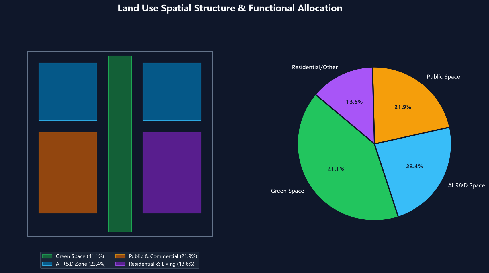
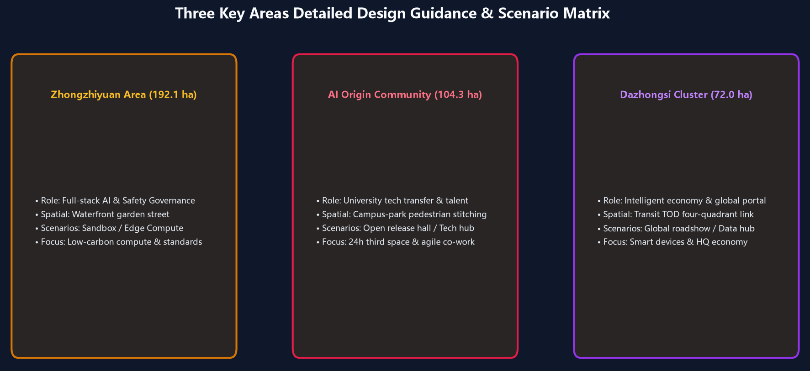
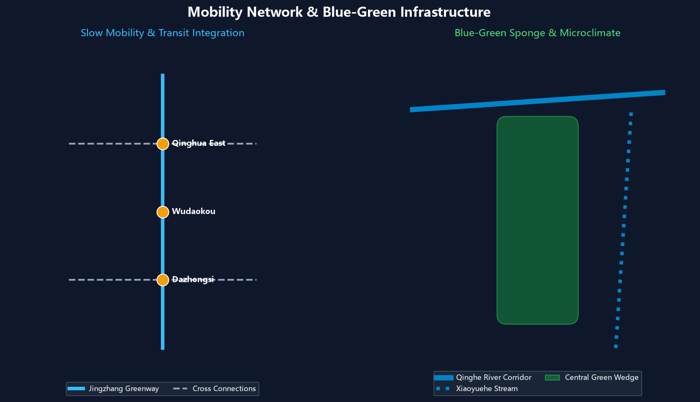
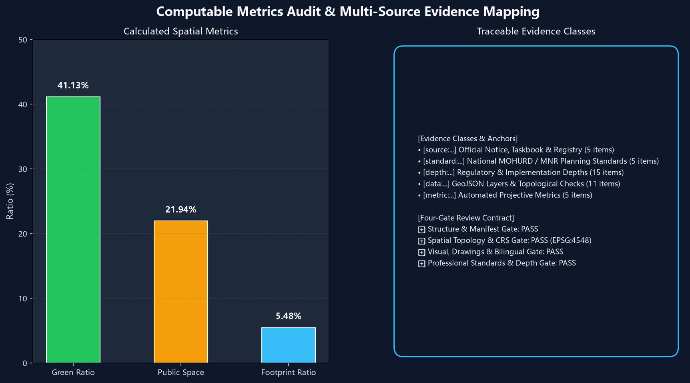

Centennial Jing-Zhang Neural Symbiosis Corridor: AI Urban Design Package
Centered on 'One Belt, Three Cores, Multi-Scenario and Blue-Green Mobility Ring', this design integrates the historical heritage of the century-old Jing-Zhang Railway with a multi-agent collaborative ecosystem across 43.6 km² research scope, 11.4 km² master corridor, and 3 detailed key areas.
Centennial Jing-Zhang: Neural Symbiosis Corridor Urban Design
Design Basis & Source Registry
This formal proposal is prepared in strict accordance with the prequalification announcement of the Centennial Jing-Zhang AI Innovation Belt Urban Design International Open Call published by Haidian Branch of Beijing Municipal Commission of Planning and Natural Resources, together with machine-readable site packages under brief/site-package/. The AI Agent parsed design_brief.json, allowed_design_space.json, sources.json, enums/, ranges/, schemas/, and data/source_registry.json before generating spatial topologies and narrative arguments 来源 来源 深度.
All design decisions are verified through traceable sources, recomputable metrics, topological layers, and transparent assumption registers 来源 来源.

Provisional boundaries are clearly tagged with official_boundary=false and provisional_constraint until official government redlines are released 空间数据 指标 空间数据 指标.
Three-Tier Work Scope Framework
The master plan operates across three defined geographic and systemic tiers 深度 深度 标准:

1. 43.6 km² Coordinating Study Area: Fosters a world-class AI innovation ecosystem and future urban form. 2. 11.4 km² Master Design Corridor: Establishes the 9km Jingzhang linear park corridor with integrated land-use, transportation, and public spaces 空间数据 空间数据. 3. 368.4 ha Key Areas Detailed Design: Detailed design for Zhongzhiyuan, AI Origin Community, and Dazhongsi Cluster 空间数据 空间数据 空间数据.
| Level | Planning Challenge | Scheme Response | Data Anchor |
|---|---|---|---|
| 43.6 km² Scope | AI innovation ecosystem & urban future | 5-stage innovation chain linking universities, open-source, enterprises, and citizens | compliance_matrix.json, standard_matrix.json |
| 11.4 km² Corridor | Master land use, mobility, ecology | Blue-green spine coordinating land use, buildings, and phasing | 空间数据, 空间数据 |
| 368.4 ha Key Areas | Detailed implementation depth | Three synergistic cores with tailored scenario matrices and urban renewal tools | 空间数据, 空间数据, 空间数据 |
AI Ecosystem, User Personas & Scenario Deck
The proposal defines 5 user personas and 10 representative AI+ spatial scenario cards 空间数据 空间数据 空间数据 指标 指标:
| User Persona | Core Demands | Spatial Response | Governance Boundary |
|---|---|---|---|
| Open Source Developer | Rapid testing, release, geek social, night co-work | AI Origin Release Hall, 24h code lounge | No individual biometric tracking; open license code |
| Startup Team | Shared compute, compliance, agile pitch | Zhongzhiyuan shared sandbox, edge stations | Network isolation & encrypted enterprise authorization |
| Enterprise Executive | Global hospitality, roadshow, strategic signing | Dazhongsi Global Roadshow Hall, TOD center | Cleared corporate marks & strict privacy protection |
| University Researcher | Tech transfer, academic exchange, walking | Campus-park connectors, academic salon bridges | IP rights protection & academic data firewalls |
| Local Resident | Green leisure, fitness, accessibility, daily services | Jingzhang Linear Park Ring, smart living street | Commercial targeting prohibited; quiet living guaranteed |
Key Areas Detailed Design

1. Zhongzhiyuan AI Acceleration Area (192.1 ha): Full-stack AI innovation, safety red-teaming sandboxes, and Qinghe waterfront garden offices 空间数据. 2. Beijing AI Origin Community (104.3 ha): Near-campus incubation for Tsinghua/PKU talent, 24h open-source commons, and youth apartments 空间数据. 3. Dazhongsi AI Industry Cluster (72.0 ha): Transit-oriented smart terminal economy, data factor exchange portal, and global AI roadshow salon 空间数据.
Mobility, Ecology & Infrastructure

- Pedestrian Stitches: Complete stitch of all highway barriers along the 9km continuous greenway 空间数据.
- Ecology & Sponge Corridor: Green ratio reaches 41.13% and public space ratio reaches 21.94% 指标 指标 空间数据 空间数据.
Metrics Recomputation & Compliance Audit
All figures are strictly recomputed under EPSG:4548 projection 深度 指标:

- Master Site Area: 11,412,825.386 m² (~11.41 km²)
- Green Space Area: 4,694,556.175 m² (Green Ratio: 41.13%)
- Public Space Area: 2,504,030.706 m² (Public Space Ratio: 21.94%)
- Building Footprint Area: 625,899.768 m²
- Key Areas Count: 3 Areas (Zhongzhiyuan, AI Origin, Dazhongsi)
Risk & Copyright Statement
Complete bilingual counterparts (proposal.md and proposal.en.md), drawings, and offline HTML apps are packaged and verified 深度 空间数据 来源.